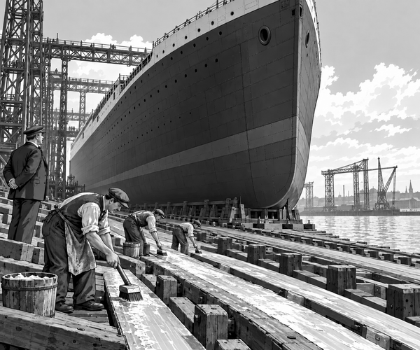

FACT
It was 31 May 1911.
A steel giant stood in a Belfast shipyard.
Her name was Titanic.
For more than two years, workers had built her hull.
They had joined thousands of steel plates.
They had hammered in millions of rivets.
Now the great hull towered above the River Lagan.
But Titanic was not finished.
She had no funnels.
She had no grand staircase.
Her engines and passenger rooms were not ready.
First, her bare hull had to reach the water.
That was a huge job.
Titanic rested on a sloping wooden track.
The track was called a slipway.
Workers crawled beneath the high hull.
They brushed a thick, slippery mixture onto the wooden ways.
It was made from tallow, oil and soft soap.
Launch fact: About 23 tons of slippery material covered Titanic's launch ways. It helped the giant hull move without sticking.
The workers checked every timber.
They cleared tools from the route.
Six heavy anchors were made ready.
Two enormous piles of drag chain waited beside the river.
The chains would help stop the hull after it entered the water.
Thousands of people gathered to watch.
They filled platforms, streets and safe viewing places.
The shipyard grew quiet.
A flag moved.
The launch triggers were released.
For one moment, nothing seemed to happen.
Then Titanic moved.
Slowly at first.
Then faster.
The unfinished hull slid stern-first down the ways.
Wood groaned.
Water rushed past the slipway.
The crowd cheered.
Titanic struck the river with a mighty splash.
Drag chains rattled behind her.
Anchors pulled against the moving hull.
The steel giant slowed.
At last, Titanic floated.
Speed fact: Titanic's launch took only 62 seconds. The hull travelled almost twice its own length before the chains and anchors stopped it.
Small tugboats moved in.
They guided the empty hull to a fitting-out berth.
There, the next great job began.
Workers fitted the engines.
They added decks, cabins and pipes.
They raised the four huge funnels.
They built the famous staircase.
The launch was not Titanic's first voyage.
It was the moment her hull first floated.
For 62 thrilling seconds, a shipyard became a launchpad.
And Belfast's steel giant met the sea.
1. What was launched into the river?
2. Why were the wooden ways made slippery?
3. What helped stop Titanic?